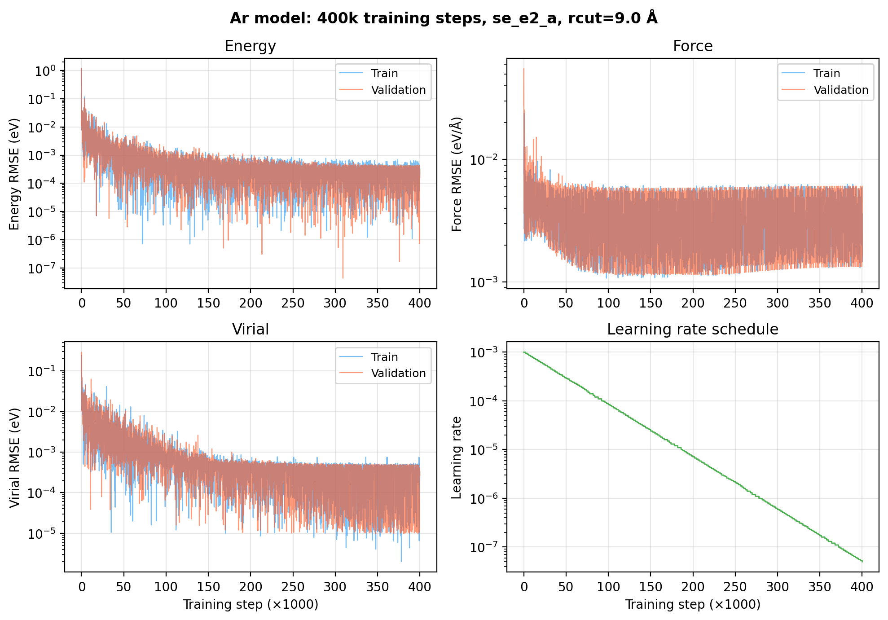
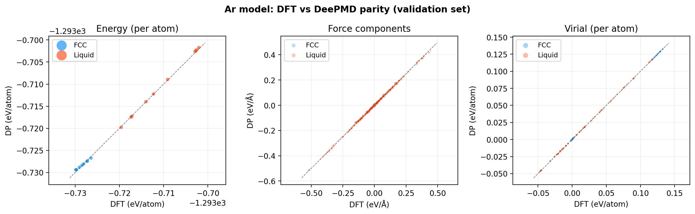
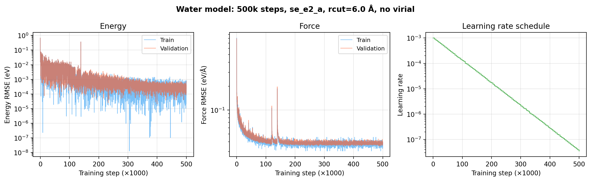
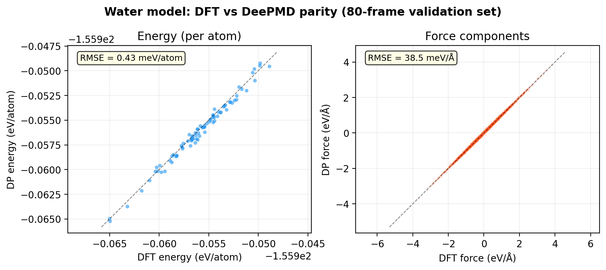
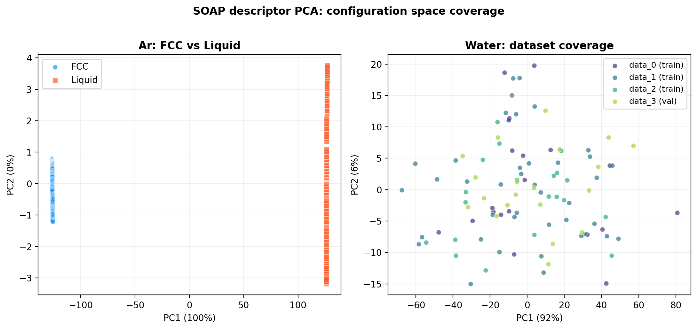

Ch 4: Your First DeePMD Model#
Enough reading. You’re training a neural network today.
By the end of this chapter, you’ll have a frozen DeePMD model. You’ll have tested it against held-out DFT data. And you’ll know exactly how to tell whether it actually learned something or whether it’s lying to you with a pretty loss curve. We’re using argon. 32 atoms. 200 training frames. Single element. Trains in about 30 minutes on a GPU.
This is the “hello world” of ML potentials. One element, no chemistry to worry about, just the interatomic potential. Perfect for seeing the entire pipeline end-to-end before you scale up to multi-element systems like water.
The Training Input#
DeePMD-kit needs one JSON file. One. It specifies everything: model architecture, training data paths, loss function, learning rate schedule. You already know what all of these pieces mean from Ch 2. Now you’re going to use them for real.
Here’s the actual input.json we used for our Ar model:
{
"model": {
"type_map": ["Ar"],
"descriptor": {
"type": "se_e2_a",
"rcut": 9.0,
"rcut_smth": 2.0,
"sel": [80],
"neuron": [10, 20, 40],
"axis_neuron": 8,
"seed": 1
},
"fitting_net": {
"neuron": [60, 60, 60],
"resnet_dt": true,
"seed": 1
}
},
"learning_rate": {
"type": "exp",
"start_lr": 0.001,
"stop_lr": 5e-8,
"decay_steps": 2000
},
"loss": {
"type": "ener",
"start_pref_e": 0.02,
"limit_pref_e": 2.0,
"start_pref_f": 1000,
"limit_pref_f": 1.0,
"start_pref_v": 0.02,
"limit_pref_v": 1.0
},
"training": {
"training_data": {
"systems": ["../00_data/training/ar_fcc", "../00_data/training/ar_liquid"],
"batch_size": "auto"
},
"validation_data": {
"systems": ["../00_data/validation/ar_fcc", "../00_data/validation/ar_liquid"],
"batch_size": "auto"
},
"numb_steps": 400000,
"seed": 10,
"disp_file": "lcurve.out",
"disp_freq": 100,
"save_freq": 5000
}
}
A few things to notice. type_map: ["Ar"]. One element. One entry in sel: [80]. That 80 means: within rcut = 9.0 Angstroms, the descriptor tracks up to 80 Ar neighbors. For a dense FCC crystal at 32 atoms in a ~10.5 Angstrom box, most atoms see all 31 neighbors. 80 is generous padding, and that’s fine.
neuron: [10, 20, 40] for the descriptor. Small. neuron: [60, 60, 60] for the fitting net. Moderate. For 200 frames, this is plenty of capacity. A bigger network just memorizes the training data and fails on everything else. That’s overfitting. The neural network equivalent of a student who memorized the answer key instead of understanding the material.
And notice start_pref_v: 0.02, limit_pref_v: 1.0. We’re training with virial because our QE AIMD gave us stress tensors (tstress = .true.). This means the model can predict pressure. NPT simulations will work. More on why this matters later.
Start small. Start here. Adjust later.
How the Config Scales: Ar → Methane → Water
Compare our Ar config with the official methane tutorial and our water model:
Parameter |
Ar (1 type, 32 atoms) |
Methane (2 types, 5 atoms) |
Water (2 types, 192 atoms) |
|---|---|---|---|
|
|
|
|
|
|
|
|
|
9.0 |
6.0 |
6.0 |
Descriptor |
|
|
|
Fitting |
|
|
|
|
400k |
1M |
500k |
Virial |
Yes |
No |
No |
Notice the pattern. sel has one entry per element type. Methane only sees 4 H and 1 C within rcut (isolated molecule). Ar sees up to 80 neighbors (dense bulk). Water sees 46 O + 92 H (liquid). The descriptor and fitting networks scale with system complexity, not system size. Methane and Ar use the same small descriptor ([10,20,40]), while water needs a bigger one ([25,50,100]) because it has more complex multi-element interactions.
You can download the methane dataset yourself:
$ wget https://dp-public.oss-cn-beijing.aliyuncs.com/community/CH4.tar
$ tar xf CH4.tar
$ ls CH4/
00.data 01.train 02.lmp
Key Insight
Split your data into training and validation. The validation_data block points to a separate dataset (10 to 20% of your total frames). During training, the loss is computed on both sets, but only the training data drives gradient updates. If the training loss keeps dropping but the validation loss plateaus or rises, you’re overfitting. The model is memorizing, not learning. This distinction is everything.
The Loss Function: Your Grading Rubric#
Before you hit train, look at the loss block one more time. Those start_pref and limit_pref values aren’t arbitrary. They’re a grading rubric, and the rubric shifts over the course of training.
Preference |
Start |
End |
What it means |
|---|---|---|---|
|
1000 |
1.0 |
Forces dominate early training |
|
0.02 |
2.0 |
Energy matters more at the end |
|
0.02 |
1.0 |
Virial included (Ar has stress data) |
Here’s what’s happening. Early in training, the model doesn’t know anything. The energy predictions are off by electron-volts. The force predictions are off by tens of eV/Angstrom. If you weighted energy and forces equally, the massive energy errors would dominate the gradient, and the model would spend all its effort getting the overall energy vaguely right while completely ignoring the force landscape.
So you start with pref_f = 1000. Forces first. Learn where atoms push and pull. Get the local structure right. Then, as the force errors shrink, the energy weight ramps up from 0.02 to 2.0, and the model refines the global energy surface.
This is the part that made it click for me. The model learns forces first because forces are local. Each atom’s force depends mostly on its immediate neighbors. Energy is global; it’s the sum over the whole system. You teach the local picture first, then refine the global one. Curriculum design for a neural network.
Running dp train#
Grab your terminal. First, put your input.json (the file shown above) in the training directory and cd into it:
$ cd ~/deepmd/ar/01_train/
$ ls
input.json
Now train:
$ apptainer exec --nv ~/deepmd-dpgen.sif dp train input.json
Or if you have DeePMD-kit installed natively:
$ dp train input.json
The --nv flag passes your GPU through to the container. Without it, you’re training on CPU. Maybe on purpose. Probably not.
Hit enter. Watch what happens:
DEEPMD INFO --------------- TRAINING ----------------
DEEPMD INFO training data with 180 frames
DEEPMD INFO validation data with 20 frames
DEEPMD INFO batch_size : auto:8
DEEPMD INFO --------------- LEARNING RATE ----------------
DEEPMD INFO start_lr: 1.000e-03
DEEPMD INFO stop_lr: 5.000e-08
...
DEEPMD INFO step=0 rmse_val=1.26e+00 rmse_e_val=1.15e+00 rmse_f_val=2.74e-02 rmse_v_val=5.94e-02
DEEPMD INFO step=100 rmse_val=1.76e+00 rmse_e_val=1.08e-02 rmse_f_val=5.52e-02 rmse_v_val=2.90e-01
DEEPMD INFO step=200 rmse_val=1.58e-01 rmse_e_val=4.49e-02 rmse_f_val=4.77e-03 rmse_v_val=3.61e-02
Those are real numbers from our Ar training run. Watch rmse_f_val (force RMSE on validation data). Step 0: 0.027 eV/Angstrom. By step 200: 0.005 eV/Angstrom. The model is learning. Fast. Are you seeing this? The descriptor is doing its job; the fitting network is locking onto the force landscape.
If rmse_f drops rapidly in the first few thousand steps, you’re in good shape. If it stays flat, something is wrong with your data, not your config. Go back to Ch 3 and check your forces.
If it goes to NaN, something is seriously broken. But we’ll get to that.
HPC Reality
Training speed: On a modern GPU (V100, A100), 400k steps for Ar (32 atoms, 200 frames) takes about 30 minutes. On CPU, 2 to 3 hours. If you’re training on CPU and didn’t intend to, check that --nv is in your Apptainer command and that nvidia-smi actually shows your GPU. If the container can’t see the GPU, training silently falls back to CPU. The job runs. It’s just painfully slow. No error message. No warning. Just silence and a clock ticking.
Reading lcurve.out#
This file is the story of your model’s education. One row per disp_freq steps. For our Ar model with disp_freq: 100, that’s 4001 rows across 400k steps. The columns are:
# step rmse_val rmse_trn rmse_e_val rmse_e_trn rmse_f_val rmse_f_trn rmse_v_val rmse_v_trn lr
Ten columns for Ar (because we have virial). For a model without virial (like our water model), you get eight columns (no rmse_v_*). Every number matters. Here’s how to read the four scenarios you’ll actually encounter:
Both training and validation losses decrease smoothly together. The model is learning and generalizing. This is what you want. This is the good outcome. Breathe.
Training loss drops, validation loss plateaus or rises. Overfitting. The model memorized the training data. It’ll ace the practice exam and bomb the real one. Fix: more data, smaller network, fewer training steps. More data is almost always the right answer.
Both losses plateau early and just sit there. Underfitting. The network is too small to capture the complexity. It’s trying to learn calculus with a brain the size of a walnut. Fix: increase neuron sizes, increase numb_steps, or (more likely) your data has issues.
Loss goes to NaN. Something is seriously wrong. Check your training data for corrupted frames (zero forces, infinite energies, missing atoms). If the data looks fine, halve start_lr to 0.0005. I’m serious. That one change has fixed NaN for me every single time. The model was taking gradient steps too large and overshooting the minimum into numerical oblivion.
{kind=link}

Fig. 12 Real learning curve from our Ar model: 400k steps. Top left: Energy RMSE drops from ~1 eV to sub-meV. Top right: Force RMSE converges to ~3-5 meV/Angstrom. Bottom left: Virial RMSE (because we trained with stress data). Bottom right: Learning rate decay from 1e-3 to 5e-8. Train and validation curves track each other closely. No overfitting.#
Simulation
Plot your learning curve:
import numpy as np
import matplotlib.pyplot as plt
data = np.loadtxt('lcurve.out')
# Columns: step rmse_val rmse_trn rmse_e_val rmse_e_trn rmse_f_val rmse_f_trn [rmse_v_val rmse_v_trn] lr
fig, (ax1, ax2) = plt.subplots(1, 2, figsize=(12, 4))
ax1.semilogy(data[:, 0], data[:, 4], label='Train') # rmse_e_trn
ax1.semilogy(data[:, 0], data[:, 3], label='Validation') # rmse_e_val
ax1.set_xlabel('Training Step')
ax1.set_ylabel('Energy RMSE (eV)')
ax1.legend()
ax2.semilogy(data[:, 0], data[:, 6], label='Train') # rmse_f_trn
ax2.semilogy(data[:, 0], data[:, 5], label='Validation') # rmse_f_val
ax2.set_xlabel('Training Step')
ax2.set_ylabel('Force RMSE (eV/Å)')
ax2.legend()
plt.tight_layout()
plt.savefig('learning_curve.png', dpi=150)
Run this. Look at the plot. If both curves trend down together, smooth and parallel, you’re golden. If the validation curve peels away from the training curve and starts climbing while training keeps dropping? That’s the gap. That’s overfitting staring you in the face. But you’ll see it. That’s the point. The learning curve doesn’t lie.
Freezing the Model#
Training is done. The model weights exist as checkpoint files (model.ckpt.*). These are internal TensorFlow/PyTorch format. LAMMPS can’t read them. Nobody can read them except the training code itself.
You need to freeze the model:
$ dp freeze -o frozen_model.pb
$ ls -lh frozen_model.pb
-rw-r--r-- 1 krishna krishna 292K Feb 27 12:00 frozen_model.pb
One command. Out comes frozen_model.pb, a frozen model that LAMMPS loads with pair_style deepmd. Typically 5 to 50 MB depending on network size (ours is small because Ar is a simple system).
Think of it as graduation. The model stops being a student and starts being an employee. It can’t learn new things anymore. It takes in coordinates, spits out energies and forces. That’s its job now. If you discover later that it’s wrong about something, you go back to the checkpoint, add new training data, retrain, and freeze again. You don’t patch a frozen model. You re-educate and re-graduate.
That’s your model. Frozen and ready.
Config Walkthrough
In the dpgen context, you never run dp freeze manually. dpgen does it automatically at the end of each training stage. The frozen models appear as iter.XXXXXX/00.train/graph.000.pb through graph.003.pb (four models, because dpgen trains four for model deviation). You’ll see this in Ch 6.
Testing the Model#
You have a frozen model. Before you use it for anything real, you test it. Against held-out DFT data. The validation set you split off back in Ch 3. This is the exam.
$ cd ~/deepmd/ar/02_test/
$ dp test -m ../01_train/frozen_model.pb -s ../00_data/validation/ar_fcc/ -n 10 -d test_fcc
$ dp test -m ../01_train/frozen_model.pb -s ../00_data/validation/ar_liquid/ -n 10 -d test_liquid
$ ls
test_fcc.e.out test_fcc.e_peratom.out test_fcc.f.out test_fcc.v.out test_fcc.v_peratom.out
test_liquid.e.out test_liquid.e_peratom.out test_liquid.f.out test_liquid.v.out test_liquid.v_peratom.out
Our Ar model results:
Metric |
FCC (50 K) |
Liquid (150 K) |
|---|---|---|
Energy RMSE/atom |
0.3 meV |
0.3 meV |
Force RMSE |
2.9 meV/Angstrom |
5.0 meV/Angstrom |
Virial RMSE/atom |
0.17 meV |
0.27 meV |
Check the numbers. Force RMSE under 5 meV/Angstrom on both phases. Energy under 1 meV/atom. That’s excellent for 200 frames of training data on a single element.
{kind=link}

Fig. 13 Ar model parity plots: DFT vs DeePMD predictions on held-out validation data. Left: Energy per atom. Center: Force components. Right: Virial per atom. Points cluster tightly around the y=x diagonal. FCC (blue) and liquid (orange) both fit well.#
What’s “Good Enough”?#
Depends on what you’re doing. Here are rough guidelines that have held up across most systems I’ve worked with:
Metric |
Excellent |
Acceptable |
Concerning |
|---|---|---|---|
Energy RMSE/atom |
< 1 meV |
1-5 meV |
> 5 meV |
Force RMSE |
< 50 meV/Å |
50-100 meV/Å |
> 100 meV/Å |
For Ar with 200 training frames, you should get under 1 meV/atom energy and under 10 meV/Angstrom forces. It’s a single element with relatively simple pairwise-like interactions. If you can’t hit those numbers with this config, the problem is in your data, not in your architecture.
For complex systems (interfaces, reactive chemistry, multi-element slabs), 2 to 5 meV/atom and 50 to 100 meV/Angstrom is typical and often sufficient for production MD. Don’t chase sub-meV accuracy on a complex system with 100 training frames. Get more data first. I’ve seen people spend weeks tweaking network sizes when the actual fix was 50 more DFT frames.
Key Insight
Energy RMSE/atom is more informative than total energy RMSE. A 10 meV error on a 5-atom system is 2 meV/atom. The same 10 meV error on a 500-atom system is 0.02 meV/atom. Always report per-atom. Always compare per-atom. If someone tells you their model has “10 meV energy error” without specifying per-atom or total, that number is meaningless. You need the system size.
Force RMSE is often more important than energy RMSE for MD simulations. Forces drive the dynamics. They determine where atoms go next. A model with 1 meV/atom energy accuracy but 200 meV/Angstrom force accuracy will produce terrible trajectories. The energy looks right. The dynamics are wrong. This is exactly why the loss function starts with start_pref_f = 1000. Forces first. Always forces first.
Common Problems#
Here’s where people actually get stuck. Not the theory. The practice. I’ve seen every one of these, most of them on my own runs.
The loss doesn’t decrease at all:
Check that your training data has non-zero forces (
tprnfor = .true.in QE). Yes, I’m repeating myself from Ch 3. No, I will not apologize.Check that your
type_mapmatchestype.raw. Print both. Compare them character by character. Don’t eyeball it. Actually compare.Verify energy and force units are correct (eV and eV/Angstrom). If you bypassed dpdata and hand-assembled your training data, this is almost certainly the problem.
The loss goes to NaN after a few thousand steps:
Try
start_lr = 0.0005instead of0.001. Start there. Adjust later. Halving the learning rate is the simplest fix.Check for corrupted frames (energies of 0.0 or absurdly large values). One bad frame can poison the whole training run. One frame. Out of hundreds.
Reduce
batch_sizeif you’re running out of GPU memory. Memory errors sometimes manifest as NaN rather than a clean crash. Helpful.
Validation loss diverges from training loss:
Overfitting. With 50 frames, even a small network will overfit. You need at least 100 to 200 diverse frames for a decent model. More data fixes this. A bigger network makes it worse. I’ve seen this go wrong too many times to be polite about it: if your validation loss is climbing, adding neurons is the wrong instinct. Adding data is the right one.
Training is extremely slow (over 1 hour for Ar):
You’re training on CPU. Run
nvidia-smiinside your container. If it doesn’t show a GPU, the--nvflag isn’t working, or your job didn’t land on a GPU node. Fix the submission script before wasting hours.Or your
selvalues are absurdly large.sel = [300]for a 32-atom Ar system means the model is allocating memory for hundreds of phantom neighbors that don’t exist. Padding. Pure waste. Matchselto the actual number of neighbors withinrcut.
Scaling Up: Water (Multi-Element)#
Ar is the hello world. A useful hello world. It proved the pipeline works, showed you what a healthy loss curve looks like, taught you how to freeze and test. But it’s one element.
Now let’s jump to water. 192 atoms (64 H₂O molecules). Two elements (type_map: ["O", "H"]). 320 training frames from the ICTP 2024 tutorial (credit: Cesare Malosso). Here’s the input.json:
{
"model": {
"type_map": ["O", "H"],
"descriptor": {
"type": "se_e2_a",
"sel": [46, 92],
"rcut_smth": 0.50,
"rcut": 6.00,
"neuron": [25, 50, 100],
"axis_neuron": 16,
"seed": 1
},
"fitting_net": {
"neuron": [240, 240, 240],
"resnet_dt": true,
"seed": 1
}
},
"loss": {
"type": "ener",
"start_pref_e": 0.02, "limit_pref_e": 1,
"start_pref_f": 1000, "limit_pref_f": 1,
"start_pref_v": 0, "limit_pref_v": 0
},
"training": {
"numb_steps": 500000
}
}
Notice the differences. sel: [46, 92]. Two numbers now, one per element type. Within rcut = 6.0 Angstroms, each atom can see up to 46 oxygen neighbors and 92 hydrogen neighbors. The network is bigger: neuron: [25, 50, 100] for the descriptor, [240, 240, 240] for the fitting net. More atoms, more complexity, bigger brain needed.
And notice start_pref_v: 0, limit_pref_v: 0. No virial training. The ICTP pre-computed data doesn’t include stress tensors. This means the model cannot predict pressure reliably. NPT simulations will show density drift. We’ll see this in Ch 5.
{kind=link}

Fig. 14 Water model learning curve: 500k steps. Energy and force RMSE converge smoothly. No virial panel (virial weight is zero). The force RMSE is much larger than Ar because water has hydrogen atoms with fast intramolecular vibrations and large force magnitudes.#
{kind=link}

Fig. 15 Water model parity plots. Energy RMSE: 0.43 meV/atom. Force RMSE: 38.5 meV/Angstrom. The force error is ~10x larger than Ar. That’s not a problem. Water is a harder system. Hydrogen bonding. Fast dynamics. Multiple elements. 38.5 meV/Angstrom is good for water. The ICTP reference reports similar numbers.#
{kind=link}

Fig. 16 SOAP descriptor PCA showing configuration space coverage. Left: Ar FCC (blue) and liquid (orange) form distinct clusters, confirming the model sees two genuinely different phases. Right: Water datasets overlap extensively, suggesting the training data covers similar liquid-water conditions.#

Fig. 17 Side-by-side accuracy comparison. Ar is ~10x more accurate in both energy and force. Single element, simpler interactions, virial training. Water is harder but still well within “acceptable” for condensed-phase MD.#
The jump from Ar to water is the jump from “I can train a model” to “I can train a model on a real system.” Water has chemistry. Hydrogen bonding. Multiple element types. The fact that it works this well with 320 frames is genuinely impressive.
The Learning Progression
The official DeePMD-kit hands-on tutorial uses a single methane molecule (CH₄) as their hello world: 5 atoms (1 C + 4 H), 200 AIMD frames from VASP, trains in 15 minutes. It’s a great starting point if you want to practice before tackling bulk systems. Our progression builds on that logic:
System |
Elements |
Atoms |
Frames |
What it teaches |
|---|---|---|---|---|
Methane (official tutorial) |
C, H |
5 (1 CH₄) |
200 |
Multi-element type_map, basic training, isolated molecule |
Ar (this tutorial) |
Ar |
32 |
200 |
Periodic boundary conditions, virial, two phases |
Water (this tutorial) |
O, H |
192 (64 H₂O) |
400 |
Condensed phase, hydrogen bonding, larger network |
Methane, Ar, and water teach different things. Methane is the simplest multi-element case. Ar is the simplest periodic bulk system. Water combines multi-element with condensed-phase complexity.
What’s Next#
Your workspace should now look like this:
$ tree ar/ -L 2
ar/
├── 00_data
│ ├── training
│ └── validation
├── 01_train
│ ├── input.json
│ ├── lcurve.out
│ ├── frozen_model.pb
│ └── model.ckpt.*
├── 02_test
│ ├── test_fcc.*.out
│ └── test_liquid.*.out
└── 03_lammps
You have a frozen model. It passed dp test with reasonable accuracy. The learning curves look healthy. The forces are physical. The validation loss tracked the training loss.
Time to give it a real job: running molecular dynamics in LAMMPS.